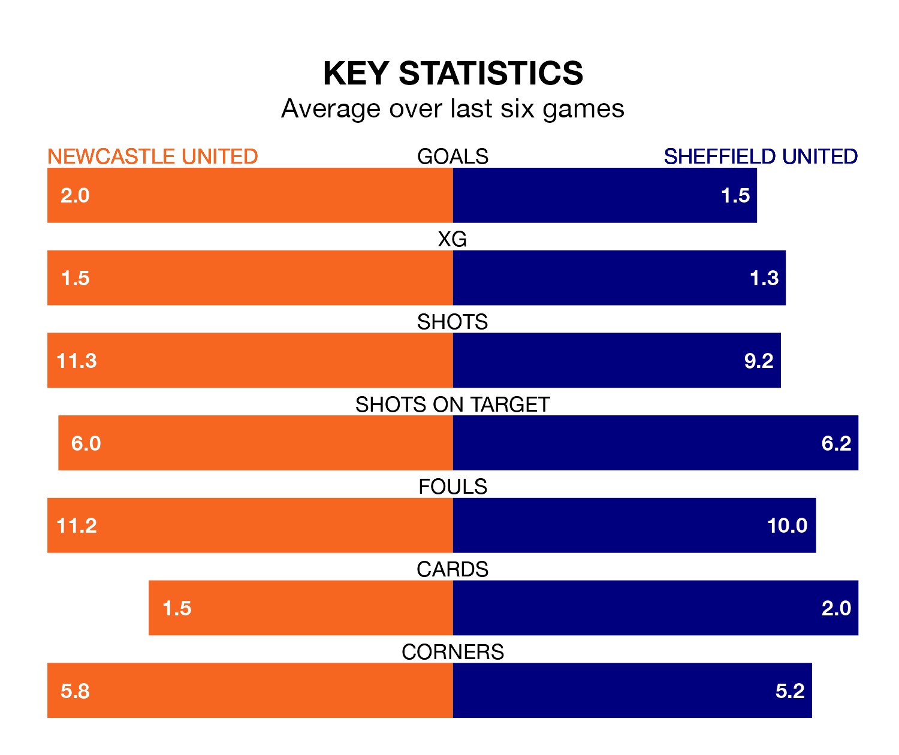

Newcastle United are heavy favourites to keep all three points at home in Saturday's kick-off against Sheffield United.
The Magpies, who sit seventh in the Premier League with 33 games played, are priced at 1.2 to seal victory at St. James' Park.
Sitting 13 places and 34 points behind them in the table, Sheffield United are 10.0 to win with *Betting Company*, while the draw is at 6.7.
Newcastle are in mixed form in the Premier League, with three wins and a draw from their last six games.
With no wins and two draws over that period, Sheffield United's form is much worse – they have taken two points from 18, compared to Newcastle United's 10.
With 33 goals in 34 games so far this season, the Blades are the league's lowest scorers with 1.0 goals per game. And they are conceding more than average, letting in 92 goals at a rate of 2.7 per game.
The Magpies, meanwhile, are above average scorers, with 2.1 goals per game, compared to a league average of 1.6. They have conceded 1.6 goals per game.
In Alexander Isak, the home team have one of the league's sharpest shooters so far this season. He has notched 17 goals in 25 appearances, to sit fifth in the scoring charts.
His goal rate of one every 109 minutes is quicker than that of Oliver McBurnie, the visitors' top scorer with a goal every 214 minutes, and a total of six goals in 21 games.
In the last five years, Newcastle and Sheffield United have played each other on five occasions. Newcastle won four of them and Sheffield United one.
On average, the Magpies scored 2.8 goals and the Blades 0.2 in those matches.
Their last meeting was on September 24, when Newcastle won 8-0 away.
Newcastle's last match was on Wednesday, a 2-0 loss against Crystal Palace.
Sheffield United lost 4-2 against Manchester United last time out, also on Wednesday, with Ben Brereton and Jayden Bogle on the scoresheet.
Updated: 07:59 (UTC), 26/04/24